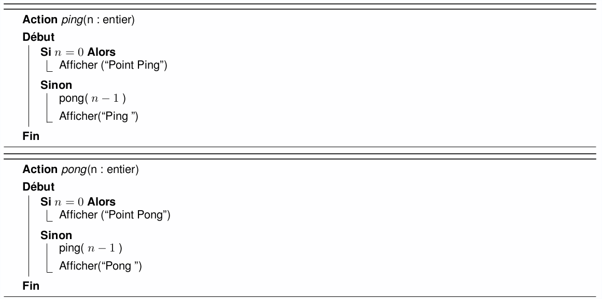

TP récursivité
Lors cette séance vous allez travailler sur la création d'algorithmes récursifs.
Exercice 1 : ping pong
Soit l'algorithme suivant :
Question 1
- Importez le projet dans NetBeans depuis ce fichier zip.
- Implémentez cet algorithme dans la classe PingPong,
- puis testez : ping(0), ping(-2), ping(1), ping(2), ping(3).
Exercice 2 : arborescence de fichiers
Un système de fichiers est organisé de manière arborescente : chaque répertoire peut contenir des fichiers et des répertoires. Dans cet exercice nous considérons qu'un répertoire n'est pas un fichier. Nous distinguons le nom d'un répertoire (par exemple "rep") de son chemin (par exemple ".", "./rep", ou "/etc/network").
La classe RechercheFichier.java contient deux méthodes :
String[] sousRepertoires(String cheminRep)
prend en paramètre le chemin d'un répertoire, et renvoie un tableau avec les noms des répertoires situés directement dans le premier répertoire. Par exemple si le répertoire dont le chemin est "./tmp" contient un répertoire "test1" et un répertoire "test2", alors le tableau renvoyé contiendra les chaînes "test1" et "test2".String[] fichiers(String cheminRep)
fonctionne sur le même principe, en renvoyant les fichiers au lieu des sous-répertoires.
Remarque : les fonctions prennent en paramètre des chemins
(comme par exemple "./monrep"), alors que la fonction sousRepertoires
renvoie des noms de répertoires (par exemple "monsousrep").
Il faudra donc concaténer les deux avec un slash (/) pour obtenir
un chemin de répertoire ("./monrep"+"/"+"monsousrep" = "./monrep/monsousrep").
Pour faire encore mieux on utilisera File.separatorChar à la place du slash.
Cette constante contient le caractère séparant les répertoires
('/' sous unix, '\' sous Windows).
Nous allons nous intéresser à deux méthodes que vous allez devoir créer/tester :
-
int nbFichiers(String cheminRep)
qui prend en paramètre un répertoire (son chemin), et renvoie le nombre de fichiers, parmi tous les répertoires qu'il contient. bool contientFichier(String cheminRep, String nomFichier)
prend en paramètre le chemin d'un répertoire, un nom de fichier, et renvoie true si le répertoire (ou l'un des répertoires qu'il contient) contient un fichier avec ce nom, et false sinon.
Question 1
- Écrivez des tests unitaires pour ces deux fonctions, dans la classe RechercheFichiersTest.
- Pour cela vous utiliserez l'arborescence présente dans le dossier code/rep_pour_tests. C'est une arborescence avec des répertoires et des fichiers. Elle contient 5 fichiers et 3 répertoires.
- Lancez vos tests : certains doivent être positifs (chercher des fichiers qui existent) et d'autres négatifs (chercher des fichiers qui n'existent pas).
Question 2
Implémenter la fonction
nbFichiersdans la classe RechercheFichier. Vérifier que ses tests unitaires sont validés.
Question 3
Implémenter la fonction
contientFichier. Vérifier que ses tests unitaires sont validés.
Exercice 3 : décomposition en binaire
On s'intéresse à la décomposition binaire d'un entier. Par exemple 6 (en base 10) s'écrira 110 (en binaire), car 6 = 1*22 + 1*21 + 0*20. On supposera que l'entier est toujours positif ou nul.
La décomposition (en base 2) d'un entier n (en base 10) se calcule facilement de manière récursive :
- si n>=2 alors les premiers chiffres sont la décomposition en binaire de n/2
- le dernier chiffre est n modulo 2.
Question 1
Implémentez cet algorithme (dans la classe Binaire) et testez-le sur les entiers 0, 1, 8 et 13 (dans la classe BinaireTest).
Exercice 4 : puissance
Soient a et n deux entiers positifs. Nous nous intéressons au calcul de an.
Question 1
Commencez par rédiger vos tests unitaires dans la classe PuissanceTest.Question 2
Écrivez la méthode (récursive)int puissance(int a, int n)dans la classe Puissance, calculant la puissance, et reposant sur l'observation suivante :
- si n est pair, an = a n/2 . a n/2
- si n est impair, an = a . a (n-1)/2 . a (n-1)/2.
Exercice 5 : voyelles et consonnes
Dans la classe VoyellesConsonnes, la méthode estVoyelle(char c) indique si un caractère est une voyelle. Dans cet exercice, nous ne considérons que les lettres non accentuées. Des tests unitaires vous sont fournis.
Question 1
Écrivez la méthode (non récursive)int nbVoyellesNonRec(String mot)permettant de compter le nombre de voyelles dans une chaîne de caractères.
Question 2
Écrivez la méthode récursiveint nbVoyellesRec(String mot)équivalente. Pour cela vous pourrez par exemple définir une méthode supplémentaire
int nbVoyellesAPartirDe(String mot, int pos)permettant de compter le nombre de voyelles dans une chaîne, à partir d'une position donnée.
Question 3
Écrivez la méthode récursiveString voyellesPuisConsonnes(String mot)prenant une chaîne de caractères en paramètre, et renvoyant la chaîne :
- commençant par toutes les voyelles de la chaîne en paramètres,
- suivies par toutes les consonnes de la chaîne en paramètre, dans l'ordre inverse.